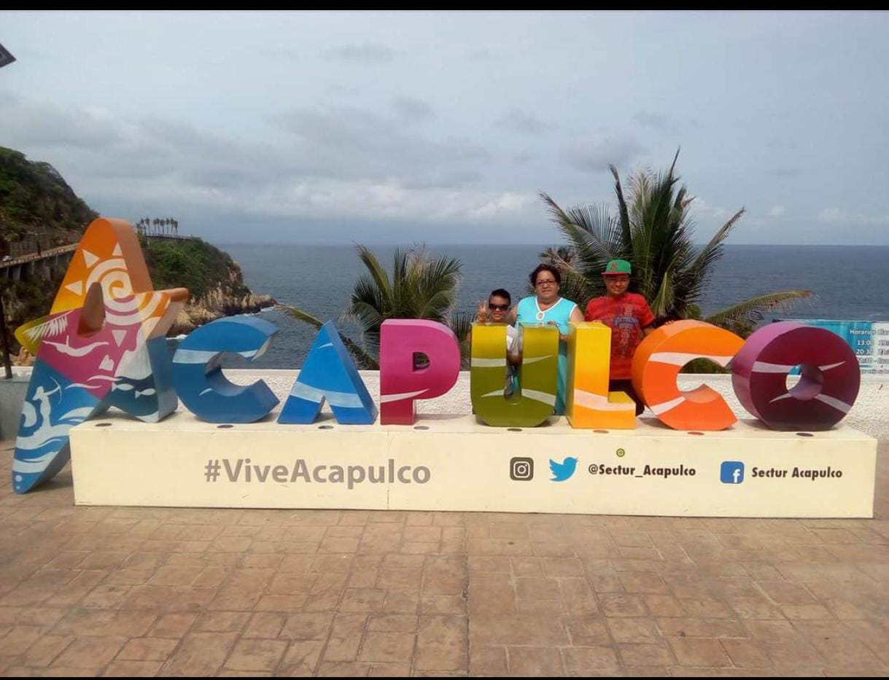

En 2015 en el mes de junio el dia 11 fue la primera vez que viaje a Acapulco con mi familia, fue la primera vez que habia conocido la playa, tenia una edad de 12 años y en ese viaje conoci lo que fue la Quebrada, salimos a ver a los clavadistas y siendo sincero hacia demasiado calor pues era verano.
Acapulco en 2017
Acapulco en 2021
En este segundo viaje fuimos porque queriamos festejar mi cumpleaños alla, y pues aqui fue la primera vez que nos habian dado una habitacion muy alta,la vista al mar era muy buena pero esta vez estabamos en zona diamante y la arena era muy limpia, no habia mucha gente puesto que estaba la pandemia pero mi familia y yo eramos asintomaticos por eso decidimos ir aun asi teniamos nuestras precauciones.
Acapulco en 2024
Tras el huracan Otis no pense que regresariamos tan pronto a Acapulco pues el desastre fue muy feo, pero mis tios como regalo de cumpleaños me invitaron a un fin de semana y llegando a la ciudad aun siguen sacando escombros de los edificios y algunos comercios ahora ya no existen, la ciudad se sigue levantando poco a poco pero el viaje fue bonito, regresamos al mismo hotel al que la ultima vez nos hospedamos y la verdad la playa nomas la ocuapabamos mis tios y otras 2 familias la verdad se disvruta mucho tener la playa para ti solito.